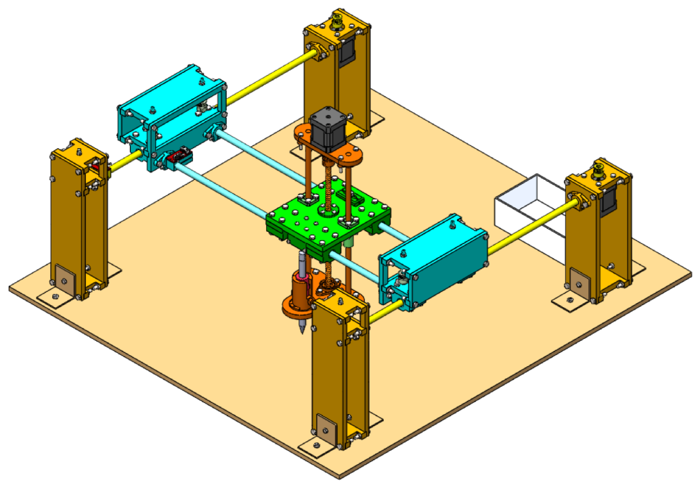

Interface de pilotage
Système cartésien H-Bot CoreXY avec outil selon Z

1. Importation SVG
Aucun fichier
Segments
0
>10 000 segments — Risque de latence.
ETA estimé
--:--
Hachures
0
Confirmés : 0 / 0
mm
mm
2. Support et Placement
Prévisualisation
JUMEAU ACTIF
Segments confirmés : 0
ETA restant : --
Stylo LEVÉ
Panneau de Jogging
Axe Z (Stylo)
Aller à (Coordonnées Absolues)
Zone de dessin libre
Zone de dessin libre (drag & drop des calques) en construction.
Guide Rapide
1. Connectez la machine via USB et cliquez sur "Connecter USB".
2. Réalisez un Homing (retour aux origines) pour calibrer les axes X et Y.
3. Effectuez une Calibration Z (si besoin) pour définir la hauteur du papier.
4. Dans l'onglet "Traçage", importez un fichier SVG et configurez le papier.
5. Complétez la checklist et lancez le tracé !
Voir la documentation complète (MkDocs)À Propos de l'équipe
Groupe 14 — Class2030 (UM6P-EMINES)
- Samy Youssoufine
- Soufiane Bourghel
- Riham Boughrara
- Rita Tamma
Projet d'ingénierie (P2) CPI-1A : Système cartésien robotisé.